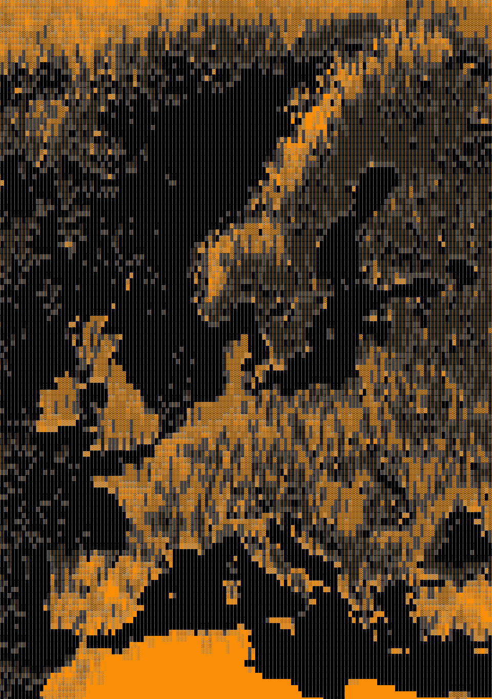

| C O N T I N E N T A L E U R O P E ~~ C E T P L |
 |
|---|
I'm Dawid, gay chaotic furry who works with IT and creates art, I grew up in the middle of nowhere, and that nowhere is in Poland near the border with the Ukraine, surrounded by forests and plains.
Trough years, I learned a lot, I learned how to code web pages, then whole web sites (you are looking at one of my creations right now!) so I feel pretty confident about my HTML/CSS skills.
I use only notepad++, there is nothing else I need, besides time and access to the internet.
When it comes to art, I have been fully doing it since 2018, time when I discovered bigger part of the internet and furry's (yeah I was a bit late to the party), voxel art was first, I used
MagicaVoxel then, from stylized scenes to realistic landscapes, later in 2022 I've begun to draw.
I experimented with few softwares, Photoshop, Sketchbook, at the end of the day, I decided on Krita, it's free, simple, good enough, with the help of many of my friends I managed to acquire basic skills.
I'm still learning, and that process will never end, I'm currently trying to master pixel art, later I will proceed to master more stylized art style, leaving at the end sketch and painting.
So that's me, I think I said everything important, but hey, maybe you still have many questions, in that case you can send me a message, and I'll be glad to add more info to this page for others.